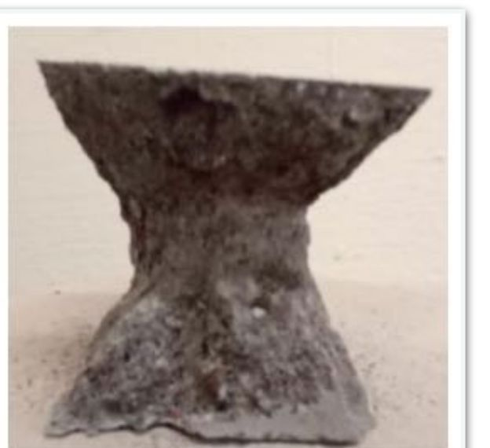

Culiacán, Mexico Compressive Strength Report
The full technical report from the Autonomous University of Sinaloa, translated and rebuilt in full. Independent compressive strength testing to ASTM C-109, the complete paste, mortar, and silica fume results, the methodology, the figures, and both congress presentations. Nothing removed.
This is a complete translation and redesign of a technical report from the Faculty of Engineering at the Autonomous University of Sinaloa, in Culiacán, Mexico. It measures what a 0.1 percent dose of In-Place BaseGrade does to the compressive strength of cement paste and mortar. Every table, figure, and value from the original is carried through, including the two congress presentations rebuilt at the end.
One clarification runs throughout. The original report, and one of its congress posters, describe the material as a polymer. It is not. In-Place BaseGrade is a certified, 100 percent organic binder. In the original it appears under earlier names, Sta'bl SOIL 3MB and SS3MB, before the brand was finalized. Here it is named by its current name and its true classification. All measurements, test values, and figures are reproduced exactly as recorded.
A 0.1 percent dose nearly doubled the strength of the cement.
Compressive strength is the headline number for any cement. Tested to ASTM C-109, untreated cement paste reached 254 kilograms per square centimeter at 14 days. The same cement, mixed with In-Place BaseGrade at 0.1 percent, reached 581. That is a 129 percent gain, on the same press, from a dose of one part in a thousand.
At 7 days the gain was already 98 percent, control paste at 231 against 457 with the binder. The increase showed up early and held, a pattern the researchers attribute to an accelerating effect. Everything here was achieved with a single 0.1 percent dose, the lowest the team tried.
One additive, measured against an untreated control.
The Faculty of Engineering at the Autonomous University of Sinaloa tested In-Place BaseGrade in cement paste and mortar, against control samples made with the same Portland cement and no additive. Cubes were cast, cured, and broken under compression at 7, 14, and 28 days. The aim was simple: find out whether a small organic dose could raise structural strength.
Study Record
| Institution | Autonomous University of Sinaloa (UAS) |
|---|---|
| Faculty | Faculty of Engineering, Culiacán |
| Laboratories | Construction, Concrete Technology, and Environmental |
| Location | Culiacán Rosales, Sinaloa, Mexico |
| Cement | Portland CPC 30R |
| Binder | In-Place BaseGrade, 100% organic, at 0.1% |
| Specimens | 2 inch cubes (5.08 x 5.08 cm), ASTM C-109 |
| Maturities | 7, 14 and 28 days |
| Test press | ELE International hydraulic press, calibrated |
| Lead researchers | Dr. Miguel A. Cruz Carrillo; M.C. Julio C. González Félix; Q.F.B. Josué A. Rodríguez Mercado |
| Supporting students | Jorge Ceballos Leyva (UAS, Los Mochis); Camilo A. Martínez Serrano (UDES, Colombia) |
| Commissioned with | Universal Eco Solutions, LLC |
The numbers came from a university laboratory.
The testing was carried out by the Construction, Concrete Technology, and Environmental laboratories of the Faculty of Engineering at the Autonomous University of Sinaloa. Every method follows a published national or international standard, from how the cubes were cast to how the water ratio and setting time were measured.
Faculty of Engineering, Culiacán. Tests led by Dr. Miguel Antonio Cruz Carrillo, professor and researcher, and M.C. Julio César González Félix, Head of Laboratories. Standards applied by ONNCCE (Mexico) and ASTM International.
Same cement, same cubes, same press.
The procedure was deliberately ordinary, so the only variable was the binder. Each step below follows a published ASTM or ONNCCE standard.
Cement and binder
Portland CPC 30R was used for every sample. Control cubes were mixed with distilled water alone. Treated cubes used a solution carrying In-Place BaseGrade at 0.1 percent. Pastes and mortars were prepared following NMX-C-085-ONNCCE-2015.
Molds and compaction
Each mix was placed in 2 by 2 inch (5.08 by 5.08 cm) metal cube molds, as set by ASTM C-109, then vibrated and compacted with a standardized tamper to remove voids.
Curing
After 24 hours the cubes were demolded and cured at 21 plus or minus 1 degree Celsius until their test age.
Optimal water
A fluidity test (ASTM C-305; NMX-C-061-ONNCCE) set the optimal water: 28 percent for the control and 29 percent for the binder. The team also ran a richer 38 percent ratio (w/c 0.38), which gave the binder its highest strength. Setting time followed ASTM C-191.
Aggregate for mortar
For the mortars, the sand was graded by fine-aggregate granulometric analysis, with aggregate quality checked to NMX-C-111-ONNCCE.
Compression test
Cubes were broken at 7, 14, and 28 days on an ELE International hydraulic press with current calibration. A separate series added silica fume at 15 percent, a particle one hundred times finer than cement, to probe finer structuring.
Every value, exactly as recorded.
Three tables carry the full result set: cement paste, mortar, and the silica fume series. Strengths are given in megapascals and in kilograms per square centimeter, each with its standard deviation, as printed in the original report.
Table 1. Cement paste, control versus In-Place BaseGrade
| Sample | Composition | w/c | Days | MPa | kgf/cm² |
|---|---|---|---|---|---|
| Control, 7 days | Portland CPC 30R + water | 0.42 | 7 | 23 ± 0.81 | 231 ± 8.22 |
| Control, 14 days | Portland CPC 30R + water | 0.42 | 14 | 25 ± 1.64 | 254 ± 16.73 |
| Control, optimal water, 7 days | Portland CPC 30R + water | 0.28 | 7 | 32 ± 0.55 | 324 ± 5.59 |
| Control, optimal water, 14 days | Portland CPC 30R + water | 0.28 | 14 | 36 ± 1.56 | 370 ± 15.92 |
| In-Place BaseGrade, 7 days | CPC 30R + 0.1% binder | 0.38 | 7 | 45 ± 2.12 | 457 ± 21.58 |
| In-Place BaseGrade, 14 days | CPC 30R + 0.1% binder | 0.38 | 14 | 57 ± 5.84 | 581 ± 59.59 |
| In-Place BaseGrade, optimal water, 7 days | CPC 30R + 0.1% binder | 0.29 | 7 | 40 ± 1.59 | 413 ± 16.19 |
| In-Place BaseGrade, optimal water, 14 days | CPC 30R + 0.1% binder | 0.29 | 14 | 52 ± 2.29 | 530 ± 23.30 |
Table 2. Mortar, control versus In-Place BaseGrade
| Sample | Composition | w/c | Days | MPa | kgf/cm² |
|---|---|---|---|---|---|
| White mortar, 7 days | CPC 30R + sand + water | 0.48 | 7 | 15 ± 0.76 | 157 ± 7.74 |
| White mortar, 14 days | CPC 30R + sand + water | 0.48 | 14 | 19 ± 2.49 | 197 ± 25.41 |
| White mortar, 28 days | CPC 30R + sand + water | 0.48 | 28 | 26 ± 2.14 | 266 ± 21.81 |
| Mortar + In-Place BaseGrade, 7 days | CPC 30R + sand + 0.1% binder | 0.48 | 7 | 17 ± 2.07 | 169 ± 21.08 |
| Mortar + In-Place BaseGrade, 14 days | CPC 30R + sand + 0.1% binder | 0.48 | 14 | 28 ± 1.34 | 287 ± 13.62 |
| Mortar + In-Place BaseGrade, 28 days | CPC 30R + sand + 0.1% binder | 0.48 | 28 | 30 ± 0.16 | 308 ± 1.59 |
Table 3. Mortar and paste with 15% silica fume and the binder (kgf/cm² with MPa in parentheses)
| Days | White mortar | Mortar + binder | Paste + 15% HS + binder | Mortar + 15% HS + binder |
|---|---|---|---|---|
| 7 | 157 (15) | 169 (17) | 379 (37) | 321 (31) |
| 14 | 197 (19) | 287 (28) | 489 (48) | 374 (37) |
| 28 | 266 (26) | 308 (30) | 544 (53) | 389 (38) |
"In the sample with the binder at 7 days an increase of 98 percent was obtained in relation to the control. The sample at 14 days increased 129 percent. This is being achieved with only 0.1 percent of the product."
Results and conclusions, original reportThe same story, drawn from the press readings.
These charts are redrawn from the values in the tables above. Each plots compressive strength against age, in kilograms per square centimeter, for the control and the treated mixes.

A small organic dose, a large structural gain.
At 0.1 percent, In-Place BaseGrade nearly doubled the early compressive strength of cement paste, and it did so with the same cement, the same cubes, and the same press used for the control.
In cement paste the gains were largest: 98 percent at 7 days and 129 percent at 14 days, with a peak of 57 megapascals (581 kilograms per square centimeter) at 14 days. The fluidity-optimal water samples gained less, which is why the team adopted the 38 percent water ratio that let the binder perform.
In mortar the gains were more modest, 8 percent at 7 days, 46 percent at 14 days, and 16 percent at 28 days. The 14-day jump is the largest, and the structure appears to stabilize by 28 days, consistent with an accelerating effect. Adding 15 percent silica fume with the binder pushed paste to 53 megapascals (544 kilograms per square centimeter) at 28 days, the study's highest value, with a clean Type 1 failure that signals good structure.
The researchers recommend testing more maturities and a range of dosages to find the minimum effective proportion. The work was carried out by the Autonomous University of Sinaloa and commissioned with Universal Eco Solutions, LLC.
The same work, taken to the research congress.
The study was also presented at the 27th Summer of Scientific and Technological Research of the Pacific, in two posters that place this work inside a broader search for ways to lower the carbon footprint of cement. Their findings are set out below. In a few places the posters round the percentages differently than the report body, which gives the 14-day paste gain as 129 percent. Those congress figures are kept here as the authors stated them.
Physical and mechanical behavior of pastes and mortars reinforced with organic and inorganic components
Advisor: Dr. Miguel Antonio Cruz Carrillo (UAS, Culiacán). Presented by Jorge Ceballos Leyva (UAS, Los Mochis) and Camilo Andrés Martínez Serrano (University of Santander, UDES, Bucaramanga, Colombia).
This poster framed the work against the climate cost of cement, which the authors put at 4 to 8 percent of the world's carbon dioxide. It compared paste and mortar reinforced with In-Place BaseGrade and with other organic and inorganic additions, including nopal fiber and silica fume, measured to ASTM C-109 at 7 and 14 days.
Compressive strength of pastes and mortars with alternative and organic components
Advisor: Dr. Miguel Antonio Cruz Carrillo (UAS, Culiacán). Presented by Karla Monserrat Virrueta Sánchez (Higher Technological Institute of Uruapan, TecNM) and Melba Sarahi Ku Tome (Technological Institute of Chetumal, TecNM).
A second poster screened low proportions of alternative materials in cement paste, metakaolin, silica fume, fly ash, and graphene oxide, with and without In-Place BaseGrade at 0.1 percent. Every mix was broken at 7 days and read against an untreated control of 231 kgf/cm².
Culiacán, Mexico Summary
The Faculty of Engineering at the Autonomous University of Sinaloa, in Culiacán, Mexico, measured what In-Place BaseGrade does to cement. Tested to ASTM C-109, untreated cement paste reached 254 kilograms per square centimeter at 14 days. The same cement, with the binder at 0.1 percent, reached 581, a 129 percent gain, and 457 against 231 at 7 days, a 98 percent gain. In mortar the gains were smaller but still clear, and a series with silica fume reached the study's highest strength.
In-Place BaseGrade raised structural strength with a dose of one part in a thousand, on the same cement, cubes, and press used for the control. The full results, the methodology, every table, all the charts, and both congress presentations are in the Full Report tab.
Culiacán, México Informe de Resistencia a la Compresión
El informe técnico completo de la Universidad Autónoma de Sinaloa, traducido y reconstruido en su totalidad. Ensayos independientes de resistencia a la compresión según ASTM C-109, los resultados completos de pasta, mortero y humo de sílice, la metodología, las figuras y las dos presentaciones de congreso. Nada omitido.
Esta es una traducción y rediseño completos de un informe técnico de la Facultad de Ingeniería de la Universidad Autónoma de Sinaloa, en Culiacán, México. Mide lo que una dosis de 0.1 por ciento de In-Place BaseGrade hace a la resistencia a la compresión de la pasta de cemento y el mortero. Se conserva cada tabla, figura y valor del original, incluyendo las dos presentaciones de congreso reconstruidas al final.
Una aclaración recorre todo el documento. El informe original, y uno de sus carteles de congreso, describen el material como un polímero. No lo es. In-Place BaseGrade es un aglutinante certificado 100% orgánico. En el original aparece bajo nombres anteriores, Sta'bl SOIL 3MB y SS3MB, antes de fijarse la marca. Aquí se nombra por su denominación actual y su verdadera clasificación. Todas las mediciones, valores de ensayo y cifras se reproducen exactamente como fueron registrados.
Una dosis de 0.1 por ciento casi duplicó la resistencia del cemento.
La resistencia a la compresión es la cifra principal de cualquier cemento. Ensayada según ASTM C-109, la pasta de cemento sin tratar alcanzó 254 kilogramos por centímetro cuadrado a 14 días. El mismo cemento, mezclado con In-Place BaseGrade al 0.1 por ciento, alcanzó 581. Eso es una mejora de 129 por ciento, en la misma prensa, con una dosis de una parte en mil.
A 7 días la mejora ya era de 98 por ciento, 231 de la pasta control frente a 457 con el aglutinante. El aumento apareció temprano y se mantuvo, un patrón que los investigadores atribuyen a un efecto acelerante. Todo esto se logró con una sola dosis de 0.1 por ciento, la más baja que el equipo probó.
Un aditivo, medido frente a un control sin tratar.
La Facultad de Ingeniería de la Universidad Autónoma de Sinaloa ensayó In-Place BaseGrade en pasta de cemento y mortero, frente a muestras control hechas con el mismo cemento Portland y sin aditivo. Se moldearon cubos, se curaron y se rompieron a compresión a 7, 14 y 28 días. El objetivo era simple: averiguar si una pequeña dosis orgánica podía elevar la resistencia estructural.
Ficha del Estudio
| Institución | Universidad Autónoma de Sinaloa (UAS) |
|---|---|
| Facultad | Facultad de Ingeniería, Culiacán |
| Laboratorios | Construcción, Tecnología del Concreto y Ambiental |
| Ubicación | Culiacán Rosales, Sinaloa, México |
| Cemento | Portland CPC 30R |
| Aglutinante | In-Place BaseGrade, 100% orgánico, al 0.1% |
| Probetas | Cubos de 2" (5.08 x 5.08 cm), ASTM C-109 |
| Edades | 7, 14 y 28 días |
| Prensa de ensayo | Prensa hidráulica ELE International, calibrada |
| Investigadores responsables | Dr. Miguel A. Cruz Carrillo; M.C. Julio C. González Félix; Q.F.B. Josué A. Rodríguez Mercado |
| Estudiantes de apoyo | Jorge Ceballos Leyva (UAS, Los Mochis); Camilo A. Martínez Serrano (UDES, Colombia) |
| En colaboración con | Universal Eco Solutions, LLC |
Las cifras provienen de un laboratorio universitario.
Los ensayos fueron realizados por los laboratorios de Construcción, Tecnología del Concreto y Ambiental de la Facultad de Ingeniería de la Universidad Autónoma de Sinaloa. Cada método sigue una norma nacional o internacional publicada, desde el moldeo de los cubos hasta la medición de la relación de agua y el tiempo de fraguado.
Facultad de Ingeniería, Culiacán. Ensayos dirigidos por el Dr. Miguel Antonio Cruz Carrillo, profesor e investigador, y el M.C. Julio César González Félix, Jefe de Laboratorios. Normas aplicadas de ONNCCE (México) y ASTM International.
Mismo cemento, mismos cubos, misma prensa.
El procedimiento fue deliberadamente común, de modo que la única variable fuera el aglutinante. Cada paso siguiente sigue una norma publicada ASTM u ONNCCE.
Cemento y aglutinante
Se usó cemento Portland CPC 30R en todas las muestras. Los cubos control se mezclaron solo con agua destilada. Los cubos tratados usaron una solución con In-Place BaseGrade al 0.1 por ciento. Pastas y morteros se prepararon siguiendo NMX-C-085-ONNCCE-2015.
Moldes y compactación
Cada mezcla se vació en moldes metálicos para cubos de 2 por 2 pulgadas (5.08 por 5.08 cm), según ASTM C-109, y se vibró y compactó con un pisón estandarizado para eliminar vacíos.
Curado
Tras 24 horas los cubos se desmoldaron y se curaron a 21 más menos 1 grado Celsius hasta su edad de ensayo.
Agua óptima
Un ensayo de fluidez (ASTM C-305; NMX-C-061-ONNCCE) fijó el agua óptima: 28 por ciento para el control y 29 por ciento para el aglutinante. El equipo también probó una proporción mayor de 38 por ciento (a/c 0.38), que dio al aglutinante su mayor resistencia. El tiempo de fraguado siguió ASTM C-191.
Agregado para mortero
Para los morteros, la arena se graduó por análisis granulométrico de agregado fino, con la calidad del agregado verificada según NMX-C-111-ONNCCE.
Ensayo de compresión
Los cubos se rompieron a 7, 14 y 28 días en una prensa hidráulica ELE International con calibración vigente. Una serie aparte añadió humo de sílice al 15 por ciento, una partícula cien veces más fina que el cemento, para estudiar una estructuración más fina.
Cada valor, exactamente como fue registrado.
Tres tablas contienen el conjunto completo de resultados: pasta de cemento, mortero y la serie con humo de sílice. Las resistencias se dan en megapascales y en kilogramos por centímetro cuadrado, cada una con su desviación estándar, tal como se imprimieron en el informe original.
Tabla 1. Pasta de cemento, control frente a In-Place BaseGrade
| Muestra | Composición | a/c | Días | MPa | kgf/cm² |
|---|---|---|---|---|---|
| Control, 7 días | Portland CPC 30R + agua | 0.42 | 7 | 23 ± 0.81 | 231 ± 8.22 |
| Control, 14 días | Portland CPC 30R + agua | 0.42 | 14 | 25 ± 1.64 | 254 ± 16.73 |
| Control, agua óptima, 7 días | Portland CPC 30R + agua | 0.28 | 7 | 32 ± 0.55 | 324 ± 5.59 |
| Control, agua óptima, 14 días | Portland CPC 30R + agua | 0.28 | 14 | 36 ± 1.56 | 370 ± 15.92 |
| In-Place BaseGrade, 7 días | CPC 30R + 0.1% aglutinante | 0.38 | 7 | 45 ± 2.12 | 457 ± 21.58 |
| In-Place BaseGrade, 14 días | CPC 30R + 0.1% aglutinante | 0.38 | 14 | 57 ± 5.84 | 581 ± 59.59 |
| In-Place BaseGrade, agua óptima, 7 días | CPC 30R + 0.1% aglutinante | 0.29 | 7 | 40 ± 1.59 | 413 ± 16.19 |
| In-Place BaseGrade, agua óptima, 14 días | CPC 30R + 0.1% aglutinante | 0.29 | 14 | 52 ± 2.29 | 530 ± 23.30 |
Tabla 2. Mortero, control frente a In-Place BaseGrade
| Muestra | Composición | a/c | Días | MPa | kgf/cm² |
|---|---|---|---|---|---|
| Mortero blanco, 7 días | CPC 30R + arena + agua | 0.48 | 7 | 15 ± 0.76 | 157 ± 7.74 |
| Mortero blanco, 14 días | CPC 30R + arena + agua | 0.48 | 14 | 19 ± 2.49 | 197 ± 25.41 |
| Mortero blanco, 28 días | CPC 30R + arena + agua | 0.48 | 28 | 26 ± 2.14 | 266 ± 21.81 |
| Mortero + In-Place BaseGrade, 7 días | CPC 30R + arena + 0.1% aglutinante | 0.48 | 7 | 17 ± 2.07 | 169 ± 21.08 |
| Mortero + In-Place BaseGrade, 14 días | CPC 30R + arena + 0.1% aglutinante | 0.48 | 14 | 28 ± 1.34 | 287 ± 13.62 |
| Mortero + In-Place BaseGrade, 28 días | CPC 30R + arena + 0.1% aglutinante | 0.48 | 28 | 30 ± 0.16 | 308 ± 1.59 |
Tabla 3. Mortero y pasta con 15% de humo de sílice y el aglutinante (kgf/cm² con MPa entre paréntesis)
| Días | Mortero blanco | Mortero + aglutinante | Pasta + 15% HS + aglutinante | Mortero + 15% HS + aglutinante |
|---|---|---|---|---|
| 7 | 157 (15) | 169 (17) | 379 (37) | 321 (31) |
| 14 | 197 (19) | 287 (28) | 489 (48) | 374 (37) |
| 28 | 266 (26) | 308 (30) | 544 (53) | 389 (38) |
"En la muestra con el aglutinante a 7 días se obtuvo un aumento de 98 por ciento en relación con el control. La muestra a 14 días aumentó 129 por ciento. Esto se logra con solo 0.1 por ciento del producto."
Resultados y conclusiones, informe originalLa misma historia, trazada desde las lecturas de la prensa.
Estos gráficos están redibujados a partir de los valores de las tablas anteriores. Cada uno traza la resistencia a la compresión frente a la edad, en kilogramos por centímetro cuadrado, para el control y las mezclas tratadas.
Una pequeña dosis orgánica, una gran ganancia estructural.
Al 0.1 por ciento, In-Place BaseGrade casi duplicó la resistencia temprana a la compresión de la pasta de cemento, y lo hizo con el mismo cemento, los mismos cubos y la misma prensa usados para el control.
En la pasta de cemento las ganancias fueron mayores: 98 por ciento a 7 días y 129 por ciento a 14 días, con un máximo de 57 megapascales (581 kilogramos por centímetro cuadrado) a 14 días. Las muestras con agua óptima de fluidez ganaron menos, por lo que el equipo adoptó la proporción de agua de 38 por ciento que permitió rendir al aglutinante.
En el mortero las ganancias fueron más modestas, 8 por ciento a 7 días, 46 por ciento a 14 días y 16 por ciento a 28 días. El salto a 14 días es el mayor, y la estructura parece estabilizarse hacia los 28 días, en línea con un efecto acelerante. Añadir 15 por ciento de humo de sílice con el aglutinante llevó la pasta a 53 megapascales (544 kilogramos por centímetro cuadrado) a 28 días, el valor más alto del estudio, con una falla tipo 1 limpia que indica buena estructura.
Los investigadores recomiendan ensayar más edades y un rango de dosis para hallar la proporción mínima efectiva. El trabajo fue realizado por la Universidad Autónoma de Sinaloa y comisionado con Universal Eco Solutions, LLC.
El mismo trabajo, llevado al congreso de investigación.
El estudio también se presentó en el 27º Verano de la Investigación Científica y Tecnológica del Pacífico, en dos carteles que sitúan este trabajo dentro de una búsqueda más amplia para reducir la huella de carbono del cemento. Sus hallazgos se exponen a continuación. En algunos casos los carteles redondean los porcentajes de forma distinta al cuerpo del informe, que da la mejora de la pasta a 14 días en 129 por ciento. Esas cifras de congreso se conservan tal como las expresaron los autores.
Comportamiento físico y mecánico de pastas y morteros reforzados con componentes orgánicos e inorgánicos
Asesor: Dr. Miguel Antonio Cruz Carrillo (UAS, Culiacán). Presentado por Jorge Ceballos Leyva (UAS, Los Mochis) y Camilo Andrés Martínez Serrano (Universidad de Santander, UDES, Bucaramanga, Colombia).
Este cartel enmarcó el trabajo frente al costo climático del cemento, que los autores sitúan entre el 4 y el 8 por ciento del dióxido de carbono mundial. Comparó pasta y mortero reforzados con In-Place BaseGrade y con otras adiciones orgánicas e inorgánicas, incluidas la fibra de nopal y el humo de sílice, según ASTM C-109 a 7 y 14 días.
Resistencia a la compresión de pastas y morteros con componentes alternativos y orgánicos
Asesor: Dr. Miguel Antonio Cruz Carrillo (UAS, Culiacán). Presentado por Karla Monserrat Virrueta Sánchez (Instituto Tecnológico Superior de Uruapan, TecNM) y Melba Sarahi Ku Tome (Instituto Tecnológico de Chetumal, TecNM).
Un segundo cartel evaluó bajas proporciones de materiales alternativos en pasta de cemento, metacaolín, humo de sílice, ceniza volante y óxido de grafeno, con y sin In-Place BaseGrade al 0.1 por ciento. Cada mezcla se rompió a 7 días y se leyó frente a un control sin tratar de 231 kgf/cm².
Culiacán, México Resumen
La Facultad de Ingeniería de la Universidad Autónoma de Sinaloa, en Culiacán, México, midió lo que In-Place BaseGrade hace al cemento. Ensayada según ASTM C-109, la pasta sin tratar alcanzó 254 kilogramos por centímetro cuadrado a 14 días. El mismo cemento, con el aglutinante al 0.1 por ciento, alcanzó 581, una mejora de 129 por ciento, y 457 frente a 231 a 7 días, una mejora de 98 por ciento. En el mortero las ganancias fueron menores pero igual de claras, y una serie con humo de sílice alcanzó la mayor resistencia del estudio.
In-Place BaseGrade elevó la resistencia estructural con una dosis de una parte en mil, sobre el mismo cemento, cubos y prensa usados para el control. Los resultados completos, la metodología, cada tabla, todos los gráficos y las dos presentaciones de congreso están en la pestaña de Informe Completo.